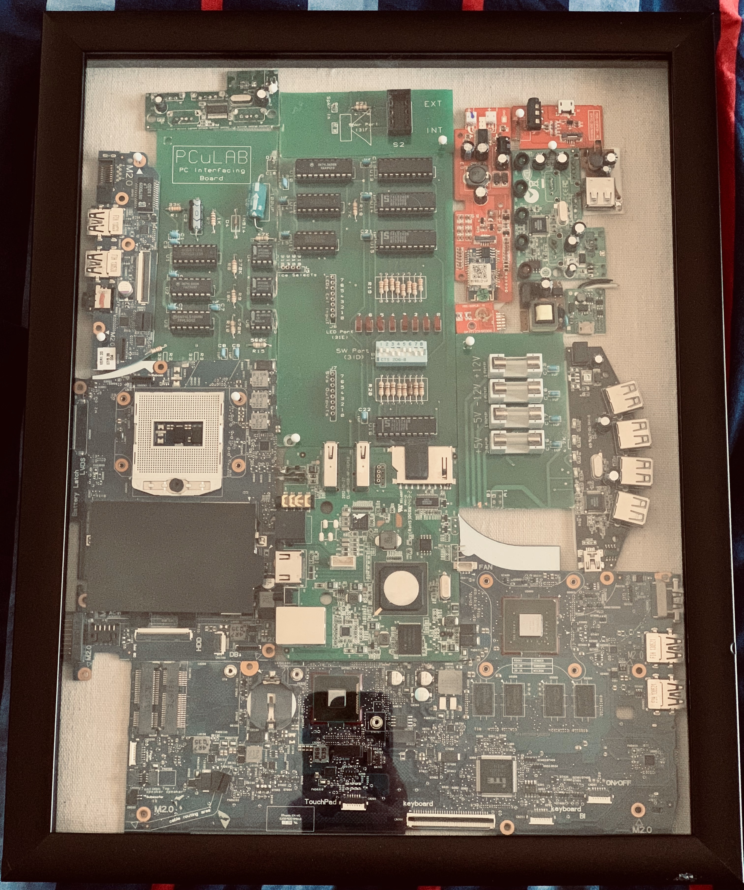

UpCycled Framed Circuit Board Portrait
I tried to make it look like Manhattan but it didn't look that way 😅
Using old circuit boards lying around, you can dremel to make any shape and size and place it into a shadow box
